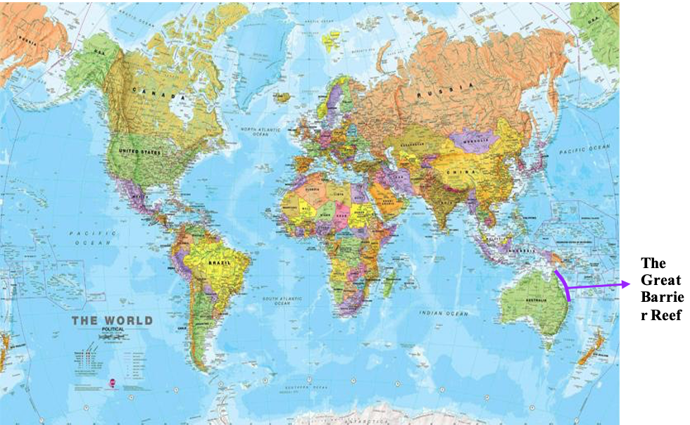

Sustainability


Introduction
Queensland, Australia, is home to the Great Barrier Reef. In addition to covering 133,000 square miles, it contains more than 3,000 individual reefs making it one largest reef systems in the world! Additionally, the reefs include over 300 coral cays and houses over 9000 different species. A wide array of marine life thrives in the shallow ocean environments of the Reefs. In the coral reef, polyps are the individual corals. Coral polyps secrete calcium carbonate exoskeletons, which are inhabited by marine creatures, including the subsequent generations of polyps. Through this process, reefs gradually grow in size. Additionally, the Great Barrier Reef has two distinct seasons, which are characterized by their rainfall patterns. From May to October, the reef's winter season is marked by low humidity, sunshine and breeze. From November to April, there is a large amount of precipitation, humidity, and thunderstorms. Overall, the Great Barrier Reef provides one of the most diverse marine ecosystems in the world.
Coral Bleaching
One global practice that negatively impacts the environment is the burning of fossil fuels or greenhouse gas. Burning natural gasses result in a large quantity of carbon dioxide (C02) released into the atmosphere. The excess amount of C02 traps heat within the atmosphere, thereby contributing to global warming. Approximately, 78% of greenhouse gas in the atmosphere is due to burning fossil fuels ("EPA"). Burning fossil fuels is a major human practice that contributes to global warming, which threatens the biodiversity of the Great Barrier Reef. Global warming has slowly been increasing ocean temperatures by 0.4-0.5°C, which has had a devastating effect on the coral reefs. Due to the increase in temperature in tropical waters, the excess heat makes corals susceptible to thermal stress, increasing the risk of infectious diseases and coral bleaching ("NOAA"). Moreover, coral bleaching is dangerous for the overall biodiversity of the Great Barrier Reef. Extreme weather patterns result in corals rejecting the algae on them and turn a grayish-white colour. Although they are not dead, they are in a fragile state, which increases the likelihood of catching diseases ("NOAA"), and in the event of severe bleaching, the coral will die. Corals are the foundation of the Great Barrier; the endangerment of coral threatens nearly 9000 marine organisms. These organisms depend on the reefs to provide shelter and food. However, when the reefs cease to exist, some species also perish along with the corals. According to Dr. Benkwitt from Lancaster University, nearly 17% of marine biodiversity will decrease due to coral deaths. Furthermore, due to Global Warming, sea levels have slowly been rising, causing land inundation, which negatively impacts the organisms that live beside the Great Barrier Reef, such as the mangroves.
Ocean Acidification / Plastic Pollution
Moreover, deforestation is a practice that indirectly harms marine life. Essentially, humans are removing the lungs that filter out the excessive carbon dioxide produced by our activities. The excessive amount of C02 in the atmosphere is absorbed by the ocean, resulting in ocean acidification. Ocean acidification lowers the PH levels of the water, disturbing the chemical properties affecting marine organisms, such as coral reefs. The missing chemical compounds affect marine animals that form shells, as it weakens their ability to build their shells, which could jeopardize their survival. Moreover, ocean acidification affects fish sensory systems (University of Florida). As a result, they become an easier target for predators, while decreasing the foraging rate. Lastly, the plastic pollution in our ocean kills marine animals every year. According to the CBD, nearly 12,000 to 24,000 tons of plastic is ingested by marine life every year. The most devastating effect is on the Green Sea Turtle. Over the last decade, Green Sea Turtles have become endangered due to unhealthy human practices. These animals mistake plastic pollution for food, resulting in internal organ damage or starvation if they think the plastics are food. Both practices affect the balance of the ecosystem; in a natural setting, every animal has a specific niche, which maintains the equilibrium. Humans are affecting the balance with destructive practices, which eventually cause a large-scale endangerment to biodiversity. Specifically, the Great Barrier Reef's biodiversity is being challenged, as myriads of species are endemic to that ecosystem, such as the Green Sea Turtle. In conclusion, human practice is negatively affecting the Great Barrier Reef.
Local Communities
Moreover, the local community also contributes to the degradation of the Reefs. Further, the Great Barrier Reef, which is surrounded by over 35 catchments, is challenged by land runoff due to its high pollutant levels. Land runoff is the process in which excess water from rainfall flows into a natural body of water. In urbanized areas, excess water cannot naturally enter bodies of water, instead, it enters nearby neighbourhoods and streets, hence the need for storm drains. Afterwards, the storm drains return the run-off water. However, stormwater may pick up sediments, nutrients in lawn fertilizers, bacteria, pesticides and garden chemicals from lawns and farms. The contaminants from the run-off eventually make their way to the marine organisms, in some cases be deadly. Moreover, nutrients from fertilizer cause a toxic algal bloom, which causes algae to die off at a faster rate, which results in a decrease in oxygen in the water (EPA). The lack of oxygen kills aquatic life (decreasing biodiversity). Moreover, coastal urbanization will lead to an increase in demand for infrastructure such as catchments. All of these pollutants are detrimental to the marine life in the Great Barrier Reef.
The Affects on local communities
- Employment crisis: The Great Barrier Reef Park employs over 60000 employees. This Park is heavily reliant on tourism. When the main attractions like the reef die, this will reduce the tourism rate. This potentially raises issues for the staff being laid off. Individuals working in this sector face the consequences of a global issue.
- Food: Fish from the Great Barrier Reef is sold to both local and global populations. Less fish in the ocean to be farmed = higher fish prices. Some people's diets are heavily reliant on fish, we affect consumers who know how to pay higher prices.
- Indigenous Communities: Indigenous communities in Australia place great importance on the natural environment. When we destroy the Great Barrier Reef, we impact them. The Great Barrier Reef has a lot of cultural significance, when we destroy them, they lose their sense of belonging with the natural environment. Additionally, communities closed off to the urban world, rely on this ecosystem for food, so we make their life much harder then it needs to be.
Solutions
Local communities can limit the amount of pollution that enter the Great Barrier Reef, by using less fertilizers on their lawns. When individuals and farms use an excessive amount of fertilizer, the leftover make their way to runoffs. Additionally, local farming communities should be taught methods to decrease run-off waters from their land. Eco-friendly practices are unknown in most farming communities which is why teaching and educating them is important. By consulting the farmers, we ensure that we are taking proper measures to support local agriculture and the environment. Additionally, we can start by planting more mangrove trees. Mangroves act as filters to the coastal waters. The mangroves trap sediments and pollutants that would otherwise pollute the ocean. Furthermore, mangroves protect local communities against the negative effects of climate change and decrease coastal erosion. Lastly, being informed and taking initiative to improve your ecological footprint can make a big difference to the environment. The government should implement lessons and class plans that emphasize and focuses on sustainable living and encourage parents to be involved in these activities. Also, promoting sustainability on apps, such as Tik Tok, can reach the teenage audience more effectively. With 10 seconds video, we can market a greener lifestyle, and hopefully, they’ll start making conscious efforts to help the environment. Teens are the future, when we inform future generations, we become more mindful of how to lead a sustainable lifestyle. Lastly, governments need to implement rigorous guidelines, to prevent big corporations from negative practices. Oftentimes, big corporations take on a sanctimonious tone and place responsibility on the people when they have the worst ecological footprint and make sustainable living near-impossible by marking sustainable products at an absurdly high price.